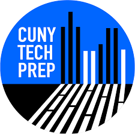

Hello, world! I'm a developer and designer.
=> "Brooklyn, NY"
> Liyu.education
=> "Brooklyn College"
> Liyu.major
=> "Computer Science"
> Liyu.minor
=> "Mathematics"
> Liyu.GPA
=> "3.83/4.00"
> Liyu.interests
=> [ "Code", "Design", "Food", "Coffee", "Dance", "Music"]
> Liyu.career.objective
=> Aiming to leverage a proven knowledge of programming, and research & analysis skills, and experience of building Web applications to successfully fill the Web Developer role at your company. Frequently praised as diligent by my peers, I can be relied upon to help your company achieve its goals.
> Liyu.resume
=> "Liyu.Resume"
> Liyu.github
=> "@Liyu.git"
> Liyu.blog
=> "Liyu.blog"
> Liyu.email
=> "jadellyu@outlook.com"
Résumé
Education
 Brooklyn College, City University of New York (CUNY)
Brooklyn, NY
Brooklyn College, City University of New York (CUNY)
Brooklyn, NY
BS, Computer Science, Mathematics Minor
Expected Dec 2021
GPA: 3.83/4.00
Relevant Coursework:Data Structures, Discrete Structures and Algorithms, Database Systems, Operating Systems, Java, C++ Programming, Human- Computer Interaction, Multimedia Programming, Math Modeling & Simulation in R, Numerical Analysis
Awards & Honors:
- Dean's Honor List
- Member of Upsilon Pi Epsilon computing discipline honor society
GitReactH2 DatabaseMySQL Jupyter Notebook Unix Linux
FigmaWixWordPressSEOAdobe PhotoshopGoogle AnalyticsGoogle Search Console
ASA College
Manhattan, NY
Jun 2017AS, Accounting
GPA: 3.88/4.00
Relevant Coursework:
Advanced Bookkeeping, Principles of Accounting Ⅰ & Ⅱ, Computerized Accounting, Principle of Finance, Principle of Microeconomics, Accounting with Electronic Spreadsheet
Certifications:
- Certificate of Completion from The American Institute of Professional Bookkeepers
Extrarricular Activities:
- Member of Phi Theta Kappa (𝚽𝚹𝛫)
Work Experience
CUNY Tech Prep
New York, NY
Fellow, Software Development
June 2021 - Present
- Learning in-demand technologies like React, Node + Express, and PostgreSQL as well as industry best practices for design, implementation, and deployment such as MVC, version control with Git/GitHub, agile & Scrum with Trello and Slack, test driven development, and CI/CD
ReactJavaScriptNode.jsExpressPostgreSQLGit/GithubAgile Software DevelopmentCI/CD
EasyFind Co.
Arcadia, California
Web Developer Intern
Sep 2020 - Dec 2020
- Designed, programmed, developed, tested, and deployed the company website.
- Established estimates and timelines for specific applications/projects and assumed responsibility for results.
- Utilized object-oriented principles and design patterns to carry out web application tasks.
- Documented and version all work using Git version software.
JavaScriptHTMLCSSWordPressGit/GithubAgile Software DevelopmentTest Driven Development
Adier Corporation
New York, NY
Web Developer Intern
2017 - 2018
- Designed, built, and maintained Wix and Wordpress web sites which reached 100% customer satisfaction, according to customer surveys, using authoring or scripting languages, content creation tools, and digital media.
- Helped clients increase visibility and rank higher in search engine results.
- Tracked Search Engine Optimization (SEO) and keyword rankings for clients’ websites using Google Analytics and Google Search Console and reported results to management.
HTMLCSSJavaScriptSEOGoogle Search ConsolePowerPoint
United Reliance Group Inc.
New York, NY
Bookkeeper Intern
Feb 2017 - May 2017
- Operated computers programmed with accounting software to record, store, and analyze information.
- Received, recorded, and banked cash, checks, and vouchers
- Debit, credit, and total accounts on computer spreadsheets and databases, using specialized accounting software.
SpreadsheetQuickBooks
Work + Fun
Tranquility
Tranquility is designed to give users the ability to use our application and get resources that would help the user find the solution. The Inspiration behind Tranquility is the fact that a lot of applications are designed to help people with mental health, but tend to fail to connect with individuals. Thus, there needs to be a way to give resources to people in need and establish a connection. Furthermore, these applications are not the easiest to use for people with mental disabilities; therefore, there was a need to simplify the questions in order to get to the result.
view projectNYC Parks
Built with a team of 3 as a final project for HCI Lab: Human Computer Interaction. NYC Parks app, a frontend project, designed for public good to let people filter parks based on certain criteria, such as park facilities, distances, and restrooms, etc.
view projectGaia
Gaia App, will help individuals calculating their carbon footprint consumption, offers a personalised recommendation on the "quick wins" action that they can do based on their inputs, and offer a donate feature for them that will be used to fund environmental and conservation acts. With this, users will be fully aware of their significant involvement in this issue and have the chance to act straight away to offset the negative externalities that they have caused.
view projectMultimedia Programming Portfolio
Cartoon, Animation, Data Visualization, Voice Recognition, Game, Chart, Notebook, Audio, Video
view projectA Techno-geek's Blog
Built a gem-based responsive website for blogging using Jekyll. It is a place where I post something I've learned.
view projectFind MyClassmate
The website allows users to upload school information about themselves which the goal of finding their classmates who lost the contact with. Through the search, users also are able to find the memories of youth.
view projectZip Code Search App
We will use the user input to search the ctp-zip-api. If the zip code is valid the API will respond with an object for each city.
view project